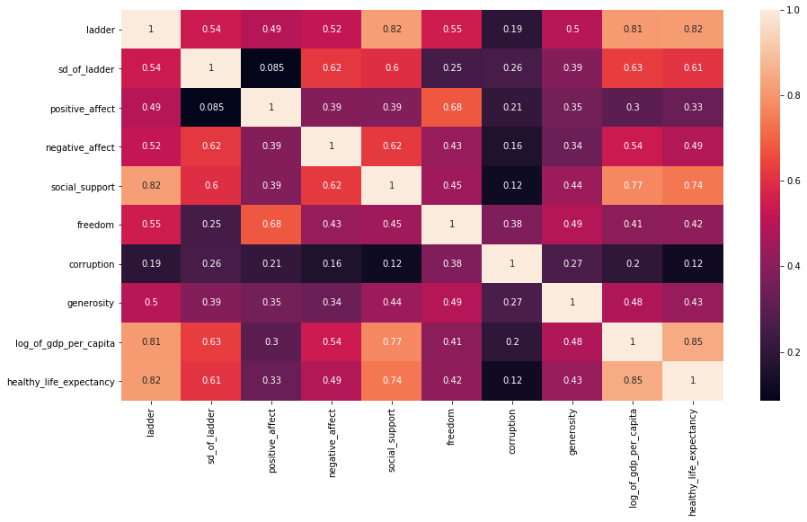

import pandas as pd
import numpy as np
import matplotlib.pyplot as plt
import seaborn as sns
from sklearn.linear_model import LinearRegression, Lasso
from sklearn.dummy import DummyRegressor
from catboost import CatBoostRegressor, Pool
import re
from sklearn.preprocessing import LabelBinarizer
from sklearn.impute import SimpleImputer
from sklearn_pandas import DataFrameMapper, CategoricalImputer
from sklearn.pipeline import make_pipeline
from sklearn.feature_selection import SelectFromModel
from sklearn.model_selection import train_test_split, cross_val_score, GridSearchCV
from sklearn.metrics import r2_score
# Import Hostel.csv data
df = pd.read_csv('data/world-happiness-report-2019.csv')
#Change column name to lowercase and replace space and dots with _
df.columns = [c.lower().replace(" ","_").replace('\n','_') for c in df.columns]
df.head()
|
country_(region) |
ladder |
sd_of_ladder |
positive_affect |
negative_affect |
social_support |
freedom |
corruption |
generosity |
log_of_gdp_per_capita |
healthy_life_expectancy |
| 0 |
Finland |
1 |
4 |
41.0 |
10.0 |
2.0 |
5.0 |
4.0 |
47.0 |
22.0 |
27.0 |
| 1 |
Denmark |
2 |
13 |
24.0 |
26.0 |
4.0 |
6.0 |
3.0 |
22.0 |
14.0 |
23.0 |
| 2 |
Norway |
3 |
8 |
16.0 |
29.0 |
3.0 |
3.0 |
8.0 |
11.0 |
7.0 |
12.0 |
| 3 |
Iceland |
4 |
9 |
3.0 |
3.0 |
1.0 |
7.0 |
45.0 |
3.0 |
15.0 |
13.0 |
| 4 |
Netherlands |
5 |
1 |
12.0 |
25.0 |
15.0 |
19.0 |
12.0 |
7.0 |
12.0 |
18.0 |
print(df.isnull().sum())
# df[df['log_of_gdp_per_capita'].isnull()]
# df.info()
df.describe()
# There are 156 countries in this dataset, from the min,max of each column, we can tell that the values are
# according to the rankings instead of a value.
country_(region) 0
ladder 0
sd_of_ladder 0
positive_affect 1
negative_affect 1
social_support 1
freedom 1
corruption 8
generosity 1
log_of_gdp_per_capita 4
healthy_life_expectancy 6
dtype: int64
|
ladder |
sd_of_ladder |
positive_affect |
negative_affect |
social_support |
freedom |
corruption |
generosity |
log_of_gdp_per_capita |
healthy_life_expectancy |
| count |
156.000000 |
156.000000 |
155.000000 |
155.000000 |
155.000000 |
155.000000 |
148.000000 |
155.000000 |
152.000000 |
150.000000 |
| mean |
78.500000 |
78.500000 |
78.000000 |
78.000000 |
78.000000 |
78.000000 |
74.500000 |
78.000000 |
76.500000 |
75.500000 |
| std |
45.177428 |
45.177428 |
44.888751 |
44.888751 |
44.888751 |
44.888751 |
42.868014 |
44.888751 |
44.022721 |
43.445368 |
| min |
1.000000 |
1.000000 |
1.000000 |
1.000000 |
1.000000 |
1.000000 |
1.000000 |
1.000000 |
1.000000 |
1.000000 |
| 25% |
39.750000 |
39.750000 |
39.500000 |
39.500000 |
39.500000 |
39.500000 |
37.750000 |
39.500000 |
38.750000 |
38.250000 |
| 50% |
78.500000 |
78.500000 |
78.000000 |
78.000000 |
78.000000 |
78.000000 |
74.500000 |
78.000000 |
76.500000 |
75.500000 |
| 75% |
117.250000 |
117.250000 |
116.500000 |
116.500000 |
116.500000 |
116.500000 |
111.250000 |
116.500000 |
114.250000 |
112.750000 |
| max |
156.000000 |
156.000000 |
155.000000 |
155.000000 |
155.000000 |
155.000000 |
148.000000 |
155.000000 |
152.000000 |
150.000000 |
plt.figure(figsize=(15,8))
sns.heatmap(df.corr(), annot=True);

# Train test split
features = ['positive_affect', 'negative_affect', 'social_support','freedom','corruption','generosity',
'log_of_gdp_per_capita', 'healthy_life_expectancy']
target = 'ladder'
X = df[features]
y = df[target]
X_train, X_test, y_train, y_test = train_test_split(X, y, test_size=0.3, random_state=42)
mapper = DataFrameMapper([
(['positive_affect'], SimpleImputer(strategy='mean')),
(['negative_affect'], SimpleImputer(strategy='mean')),
(['social_support'], SimpleImputer(strategy='mean')),
(['freedom'], SimpleImputer(strategy='mean')),
(['corruption'], SimpleImputer(strategy='mean')),
(['generosity'], SimpleImputer(strategy='mean')),
(['log_of_gdp_per_capita'], SimpleImputer(strategy='mean')),
(['healthy_life_expectancy'], SimpleImputer(strategy='mean'))
], df_out=True)
Z_train = mapper.fit_transform(X_train)
Z_test = mapper.transform(X_test)
# Dummy Regressor as a naive model
dummy = DummyRegressor(strategy="median")
dummy.fit(X_train, y_train)
print(f'Score to beat on train set -> {dummy.score(X_train, y_train)}')
print(f'Score to beat on test set -> {dummy.score(X_test, y_test)}')
Score to beat on train set -> -0.0034563367373134923
Score to beat on test set -> -0.01558583079517084
# Ignore DeprecationWarning & convergenceWarning
import warnings
from sklearn.exceptions import ConvergenceWarning
warnings.filterwarnings("ignore", category=DeprecationWarning)
warnings.filterwarnings("ignore", category=ConvergenceWarning)
# Using linear, lasso and catboost models
# Create pipeline for linear regression
linear_params = {
'fit_intercept' : [True, False],
'normalize' : [False, True]
}
pipe_linear = make_pipeline(
mapper,
SelectFromModel(LinearRegression(), max_features=5),
GridSearchCV(LinearRegression(), linear_params, cv=3)
)
pipe_linear.fit(X_train, y_train)
print(f"The score on train set -> {pipe_linear.score(X_train, y_train)}.")
print(f"The score on test set -> {pipe_linear.score(X_test, y_test)}.")
pipe_linear['gridsearchcv'].best_estimator_
The score on train set -> 0.8290497917570301.
The score on test set -> 0.6153386199555004.
LinearRegression(copy_X=True, fit_intercept=False, n_jobs=None, normalize=False)
|
country_(region) |
ladder |
sd_of_ladder |
positive_affect |
negative_affect |
social_support |
freedom |
corruption |
generosity |
log_of_gdp_per_capita |
healthy_life_expectancy |
| 146 |
Haiti |
147 |
111 |
142.0 |
119.0 |
146.0 |
152.0 |
48.0 |
20.0 |
138.0 |
125.0 |
| 147 |
Botswana |
148 |
125 |
87.0 |
65.0 |
105.0 |
60.0 |
54.0 |
150.0 |
66.0 |
113.0 |
| 148 |
Syria |
149 |
137 |
155.0 |
155.0 |
154.0 |
153.0 |
38.0 |
69.0 |
NaN |
128.0 |
| 149 |
Malawi |
150 |
132 |
129.0 |
110.0 |
150.0 |
65.0 |
64.0 |
109.0 |
147.0 |
119.0 |
| 150 |
Yemen |
151 |
85 |
153.0 |
75.0 |
100.0 |
147.0 |
83.0 |
155.0 |
141.0 |
124.0 |
| 151 |
Rwanda |
152 |
63 |
54.0 |
102.0 |
144.0 |
21.0 |
2.0 |
90.0 |
132.0 |
103.0 |
| 152 |
Tanzania |
153 |
122 |
78.0 |
50.0 |
131.0 |
78.0 |
34.0 |
49.0 |
125.0 |
118.0 |
| 153 |
Afghanistan |
154 |
25 |
152.0 |
133.0 |
151.0 |
155.0 |
136.0 |
137.0 |
134.0 |
139.0 |
| 154 |
Central African Republic |
155 |
117 |
132.0 |
153.0 |
155.0 |
133.0 |
122.0 |
113.0 |
152.0 |
150.0 |
| 155 |
South Sudan |
156 |
140 |
127.0 |
152.0 |
148.0 |
154.0 |
61.0 |
85.0 |
140.0 |
143.0 |
# Using South Sudan's variable to predict --> How the backend creates prediction
test = np.array([127,152,148,154,61,85,140,143]).reshape(1,-1)
tester = pd.DataFrame(data=test, columns=features)
result = pipe_linear.predict(tester)
result[0] = 148.6
print(result)
index = np.round(result[0])
print(index)
df['country_(region)'][index - 1] # --> Index is ladder minus 1
# Create pipeline for lasso regressor
lasso_params = {
'alpha' : [0.1, 1, 5, 10, 20],
'fit_intercept':[True,False],
'random_state': [42]
}
pipe_lasso = make_pipeline(
mapper,
# SelectFromModel(LinearRegression(), max_features=7),
GridSearchCV(Lasso(), lasso_params, cv=3)
)
pipe_lasso.fit(X_train, y_train)
print(f"The score on train set -> {pipe_lasso.score(X_train, y_train)}.")
print(f"The score on test set -> {pipe_lasso.score(X_test, y_test)}.")
pipe_lasso['gridsearchcv'].best_estimator_
The score on train set -> 0.8536292061235335.
The score on test set -> 0.6710755691634984.
Lasso(alpha=20, copy_X=True, fit_intercept=False, max_iter=1000,
normalize=False, positive=False, precompute=False, random_state=42,
selection='cyclic', tol=0.0001, warm_start=False)
# Catboost
cat_features = features
print(cat_features)
cb = CatBoostRegressor(
iterations=500,
random_seed=42,
learning_rate=0.1,
early_stopping_rounds=20
)
cb.fit(
Z_train, y_train,
eval_set=(Z_test, y_test),
plot=True
)
['positive_affect', 'negative_affect', 'social_support', 'freedom', 'corruption', 'generosity', 'log_of_gdp_per_capita', 'healthy_life_expectancy']
0: learn: 45.3598602 test: 42.7754550 best: 42.7754550 (0) total: 85.7ms remaining: 42.8s
1: learn: 44.9122021 test: 42.7634073 best: 42.7634073 (1) total: 97.2ms remaining: 24.2s
2: learn: 44.6901016 test: 42.9243994 best: 42.7634073 (1) total: 101ms remaining: 16.7s
3: learn: 44.4116697 test: 42.9927616 best: 42.7634073 (1) total: 104ms remaining: 13s
4: learn: 44.1884245 test: 43.0449422 best: 42.7634073 (1) total: 108ms remaining: 10.7s
5: learn: 43.9271426 test: 43.0432864 best: 42.7634073 (1) total: 111ms remaining: 9.13s
6: learn: 43.3937721 test: 43.2417683 best: 42.7634073 (1) total: 116ms remaining: 8.19s
7: learn: 42.9352427 test: 43.6081093 best: 42.7634073 (1) total: 119ms remaining: 7.35s
8: learn: 42.6914296 test: 43.8173266 best: 42.7634073 (1) total: 122ms remaining: 6.68s
9: learn: 41.9921409 test: 43.7553171 best: 42.7634073 (1) total: 127ms remaining: 6.22s
10: learn: 41.3418487 test: 43.6024675 best: 42.7634073 (1) total: 131ms remaining: 5.82s
11: learn: 41.0142511 test: 43.5048650 best: 42.7634073 (1) total: 134ms remaining: 5.44s
12: learn: 40.5056671 test: 43.6886770 best: 42.7634073 (1) total: 137ms remaining: 5.12s
13: learn: 40.2157179 test: 43.6707096 best: 42.7634073 (1) total: 139ms remaining: 4.83s
14: learn: 39.4477070 test: 43.9339406 best: 42.7634073 (1) total: 142ms remaining: 4.58s
15: learn: 38.6712261 test: 44.4431514 best: 42.7634073 (1) total: 145ms remaining: 4.39s
16: learn: 38.1985018 test: 44.3301780 best: 42.7634073 (1) total: 151ms remaining: 4.3s
17: learn: 37.8280146 test: 44.0791063 best: 42.7634073 (1) total: 154ms remaining: 4.13s
18: learn: 37.5405840 test: 44.1975842 best: 42.7634073 (1) total: 157ms remaining: 3.97s
19: learn: 36.9807034 test: 44.5076596 best: 42.7634073 (1) total: 159ms remaining: 3.81s
20: learn: 36.5721769 test: 44.4072676 best: 42.7634073 (1) total: 161ms remaining: 3.67s
21: learn: 36.0411183 test: 44.5712683 best: 42.7634073 (1) total: 164ms remaining: 3.56s
Stopped by overfitting detector (20 iterations wait)
bestTest = 42.76340726
bestIteration = 1
Shrink model to first 2 iterations.
<catboost.core.CatBoostRegressor at 0x7f6a6e20ad30>
y_train_pred = cb.predict(X_train)
y_test_pred = cb.predict(X_test)
print(f'The score on train set -> {r2_score(y_train, y_train_pred)}.')
print(f'The score on train set -> {r2_score(y_test, y_test_pred)}.')
The score on train set -> 0.03701180390587466.
The score on train set -> 0.021314961573651203.
The lasso model is chosen as the predictor because it has the highest score on test set and train set. You can visit the website here.